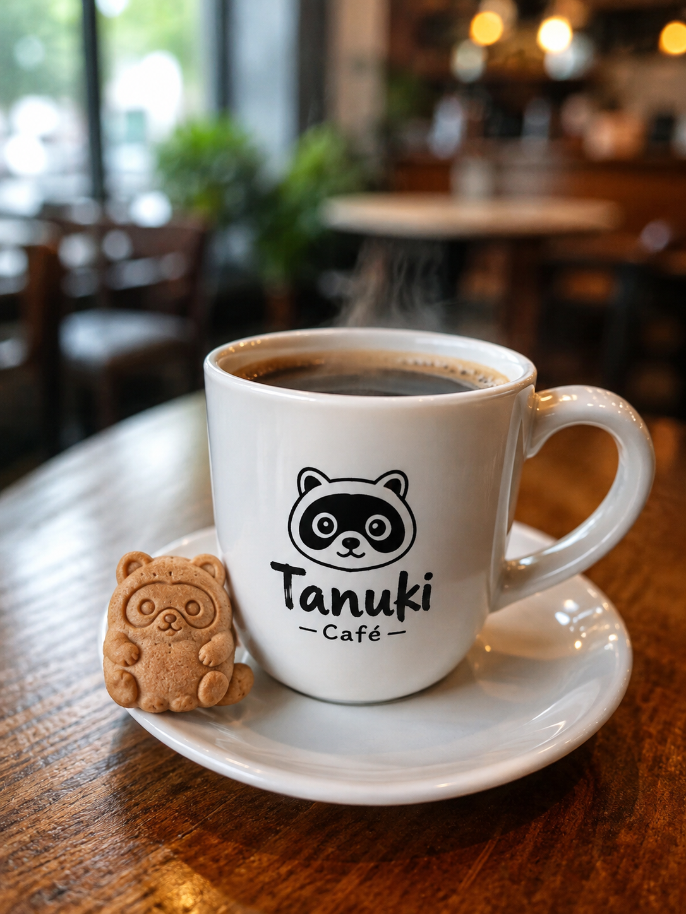
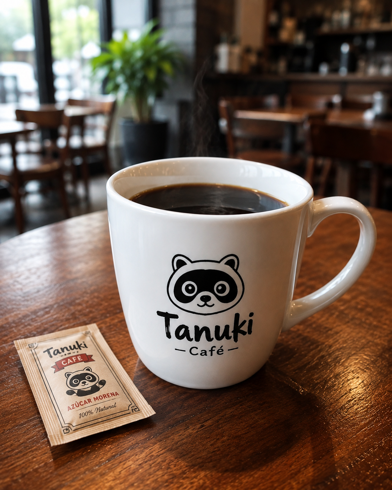
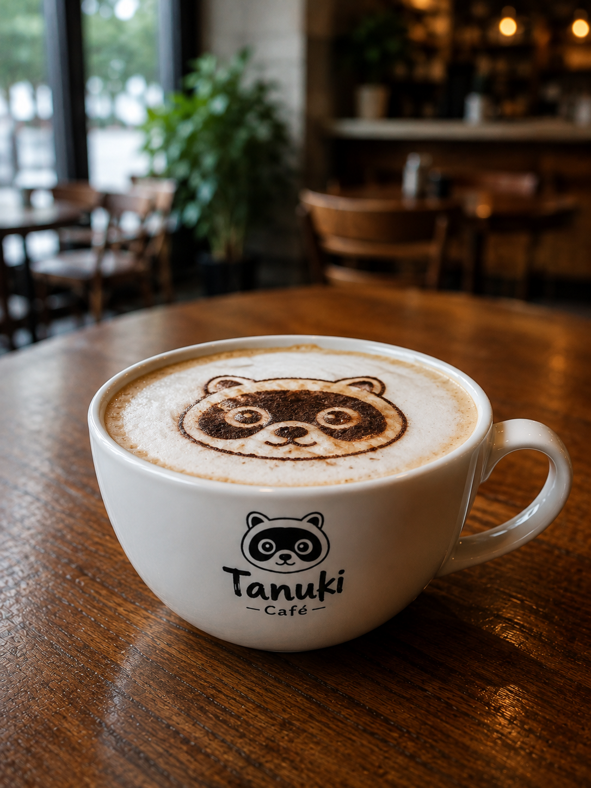
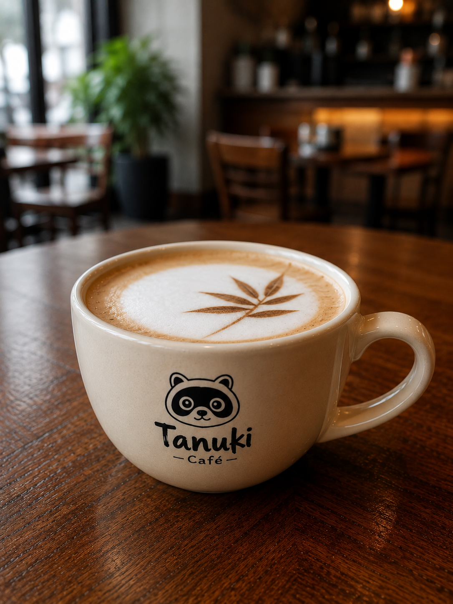
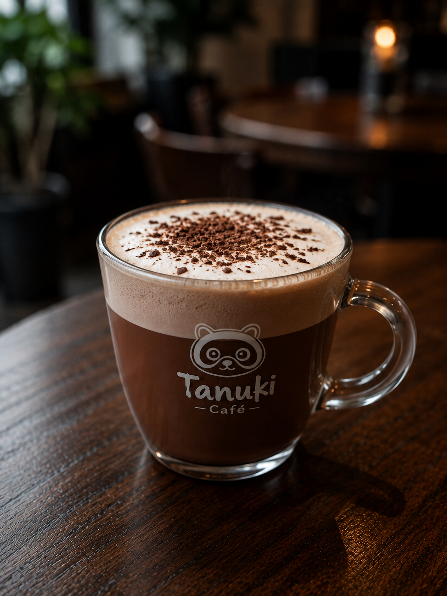
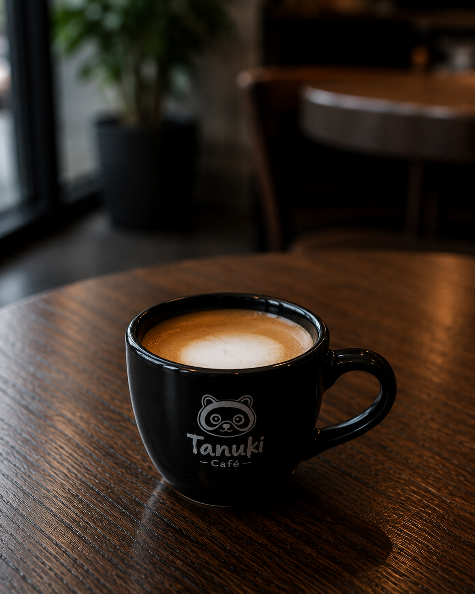

NUESTROS CAFÉS
$2.50
Café Tanuki
Café de la casa, intenso y aromático.
Especialidad
$2.00
Espresso 90's
Espresso clásico y concentrado.

$2.50
Americano Retro
Espresso diluido en agua caliente.

$3.50
Cappuccino Tanuki
Espresso con leche vaporizada y abundante espuma.

$3.50
Latte del Bosque
Café suave con leche súper cremosa.

$4.00
Mocha 1995
Mezcla perfecta de café, chocolate y leche.
Favorito
$3.00
Macchiato Elegante
Espresso intenso con solo un toque de leche.

Desliza para explorar